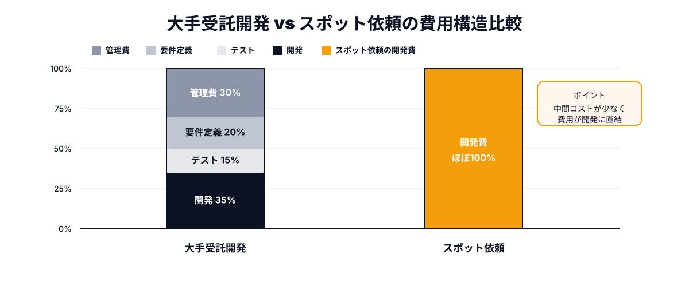
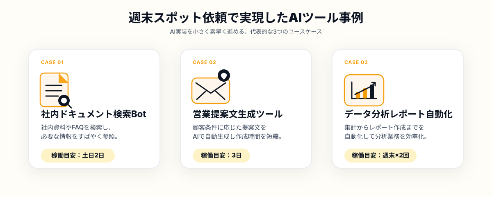

「ChatGPTのAPIを使って社内の問い合わせ対応を自動化したい」「営業資料の作成をAIエージェントに任せられないか」——こういった構想を持ちながらも、実際の開発に踏み出せていない企業は少なくありません。よく聞く理由は二つです。「社内にAIを実装できるエンジニアがいない」「開発会社に見積もりを取ったら、想定より遥かに高額だった」。
しかし、2026年現在、これらの課題を解決する現実的な選択肢があります。AIに強いフリーランス・副業エンジニアを「週末だけ・タスク単位」でスポット依頼するというアプローチです。大手受託開発の数十〜数百万円とは異なり、スモールスタートで始め、動くプロトタイプを確認してから次のフェーズに進む。このサイクルを回せるようになった企業が、着実にDXで成果を出しています。
この記事では、社内にエンジニアがいない・AI開発の予算を大きく取れない企業が、週末スポット依頼でAIエージェントやAI社内ツールを実現するための具体的な手順と考え方を解説します。
「AIを社内に入れたい」のにDXが進まない本当の理由
経営者やWebディレクターからよく聞くのは、「社内DXを進めたいが、どこから手をつければいいかわからない」という言葉です。この問題の根本は、多くの場合「予算」や「人材」の話である前に、「何をどんな粒度で依頼すればいいか」のフレームが整っていないことにあります。
「AIを導入する」という言葉は実態として非常に曖昧です。ChatGPTをそのまま社員に使わせることも「AI導入」だし、自社データで学習した社内専用のRAGシステムを構築することも「AI導入」です。この粒度の違いが理解できていないまま開発会社に相談すると、先方は大きなスコープで提案してくるため、見積もりが膨らみます。
結果として、担当者は「やっぱり大きな予算がないとAIは難しい」と判断して先送りにする——このパターンが繰り返されているのが、日本企業のAI活用が遅れている現実的な原因のひとつです。
- 「AI導入」という大きなテーマのまま開発会社に相談し、高額見積もりで止まってしまう
- 社内に「ちょっと試せるエンジニア」がおらず、アイデアが実証されないまま消えていく
- PoC（概念実証）と本番実装を同じ予算で考えてしまい、予算確保でつまずく
解決の方向性はシンプルです。「まず動くものを小さく作る」ことを最優先にし、それに特化したエンジニアを「そのタスクの期間だけ」アサインする。このアプローチが機能するためには、週末やスポットで動けるAIエンジニアへのアクセス手段が必要で、そこにANKENのようなマイクロマッチングサービスが実際に活用されるようになっています。
大手受託開発に頼めない企業が増えているワケ
AI受託開発市場は2026年に入り急拡大していますが、それは同時に「大手開発会社が忙しくなり、小規模・短期の案件を請けにくくなっている」ことも意味します。実際、PoC規模（予算100〜300万円程度、期間2〜3ヶ月）の案件は、多くの受託開発会社にとって採算が合いにくく、優先度が下がりやすいのが現実です。
また、大手受託会社に依頼する場合の費用構造として、プロジェクト管理費・要件定義費・テスト費などが積み重なり、実際の開発稼働に充てられる費用は全体の50%を下回るケースも珍しくありません。「エンジニアの作業時間に対して払っている」というより、「会社の管理コストに払っている」という感覚を持つ発注者が多いのはこのためです。
一方、副業・フリーランスエンジニアへの直接スポット依頼では、この中間コストを大幅に削減できます。当然、プロジェクト管理や要件整理は発注側である程度準備する必要はありますが、「動くプロトタイプを作ること」に集中したスコープの案件であれば、費用対効果は大手受託と比べて明確に高くなります。

週末スポット依頼でAIエージェントを作る4つのステップ
では、実際にどのようにスポット依頼を進めればいいのでしょうか。スムーズに動くプロトタイプに辿り着いた企業事例から共通するプロセスを整理すると、以下の4ステップになります。
STEP1｜課題を「タスク単位」に分解する
最初にすべきは、「社内AIツールを作りたい」という大きなゴールを、エンジニアに依頼できる具体的なタスクに落とし込むことです。たとえば「社内ドキュメントに対してQ&Aができるチャットボットを作りたい」というゴールであれば、「①PDFをベクトルDBにインポートするスクリプトの作成」「②LangChainを使ったRAG検索ロジックの実装」「③SlackBotとして動作確認できる状態にする」というように分解できます。
各タスクが独立した成果物として定義されると、エンジニアへの依頼が格段にスムーズになります。依頼の曖昧さが減ると、スポットエンジニアでも短期間で確実に動くものを届けられる確率が上がります。ANKENへ相談する際も、この状態まで整理できていると、最適なエンジニアのマッチング精度が高まります。
STEP2｜必要なスキルセットを特定する
AIエージェント・社内ツール開発に必要なスキルは、プロジェクトの内容によって異なります。OpenAI APIやAnthropic APIを中心としたLLM組み込みであればPythonバックエンドの経験、フロントエンドまで含めた社内ツールの場合はNext.jsやReactの経験、データベース連携が必要ならSupabaseやFirebaseの知識、というように、必要なスタック構成が変わります。
スポット依頼で失敗しやすいパターンは、「AIに強いエンジニア」という漠然とした条件で探すことです。「○○を実装したことがある人」という形で具体的なスキルを特定できると、マッチングの精度が上がり、初回のスポットで動くものを届けてもらえる確率が高まります。ANKENのマッチングサービスでは、発注者が技術要件を共有すれば、それに合ったエンジニアを提案するサポートも行っています。
STEP3｜スポットエンジニアをアサインする
タスク定義とスキル要件が揃ったら、実際のアサインに進みます。ANKENでは、週末や平日夜にスポットで稼働できるエンジニアが登録しているため、「来週の土日に集中して作業してほしい」という依頼にも対応可能なケースがあります。大手受託会社のように「チームアサインまで2ヶ月待ち」という状況とは異なり、発注から稼働開始までのリードタイムを短くできる点が、スポット依頼の強みのひとつです。
アサイン前の確認事項として押さえておきたいのは、成果物の定義・納品形式・利用ツール（GitHubでのコード管理、Notionでの進捗共有など）です。これらを事前に合意しておくことで、エンジニアが迷わず作業に集中でき、短いスポット期間でも高い完成度のものが届きます。
STEP4｜プロトタイプを動かして社内で評価する
週末スポット依頼の最大の目的は「動くプロトタイプを社内で試す」ことです。完璧なシステムを最初から作ることではなく、「これは本当に使えそうか？」を社内で判断できる状態を最速で作ることが優先です。プロトタイプが動いた段階で、改善点や追加機能の要望を社内で集め、次のスポット依頼に反映させる。このサイクルを2〜3回繰り返すと、本格導入に値するツールへと育っていきます。
この「スモールスタートの繰り返し」というアプローチは、大手受託開発のウォーターフォール型とは本質的に異なります。予算を分割して使えるため、最初の試みがうまくいかなくても損失が最小限に抑えられ、失敗から学んで次に活かしやすい点が特徴です。
実際にどんな案件が週末スポットで実現しているか

ANKENを通じたスポット発注の事例から、実際にどのようなAIツール・エージェント開発が週末単位で実現しているかを紹介します。
まず多いのは、社内ドキュメント検索の自動化です。マニュアルや規程類が増えすぎて「どのファイルに何が書いてあるかわからない」という課題を持つ企業が、社内ドキュメントをベクトルDBに格納しLLMで検索・回答できる仕組みをPoCとして構築した事例があります。週末2日のスポット稼働で、Slackから質問を投げると関連ドキュメントを引用して回答するBotのプロトタイプが完成しています。
次に、営業・カスタマーサクセス向けの提案文生成ツールです。案件情報を入力すると過去の成功事例と類似したトーンで提案文の草案を自動生成するツールで、フロントエンド（Webフォーム）とバックエンド（OpenAI API連携）を合わせて週末3日ほどのスポット作業で動作確認できるレベルに仕上げた例があります。営業担当者が「自分で微調整して使える」状態まで届けることが目標に設定されていました。
また、データ分析レポートの自動生成も需要が増えています。Google AnalyticsやBigQueryからデータを取得し、LLMに自然言語でのサマリーレポートを生成させるスクリプトの実装です。週1回の定期実行でSlackに投稿する形に仕上げるまで、スポット稼働2回（各週末）で完成した事例があります。
- 成果物のスコープが「動作確認できるプロトタイプ」レベルで定義されている
- 既存のAPIやライブラリを組み合わせる実装で、ゼロからの設計が少ない
- 社内ユーザー数が少なく、最初は耐久性よりも機能検証を優先できる
- フィードバックを出せる社内担当者がおり、稼働中にリアルタイムで要望を伝えられる
共通しているのは、「まず試す」という発注側のマインドセットです。完璧なシステムを最初から作ることを求めず、「使ってみてわかったことを次の依頼に活かす」というサイクルを前提にしているため、スポットエンジニアの短期稼働でも確実に前進できています。
まとめ・ANKENへのご相談
社内でAIエージェントやAIツールを作りたいと考えている企業にとって、「大手受託開発に頼む」か「社内エンジニアを採用する」かという二択は、2026年においては必ずしも正解ではありません。週末スポットでAIに強いエンジニアを直接アサインし、小さく動かして検証する——このアプローチが、特に中規模以下の企業では費用対効果・スピードの両面で合理的な選択肢になっています。
重要なのは「依頼できるタスク単位に分解すること」と「動くプロトタイプを最初のゴールに設定すること」です。この2点を押さえたうえでANKENに相談いただければ、発注内容に合ったAIエンジニアを提案します。まずは概算の要件でも構いません。固定費ゼロ・面談最小限で、今すぐ動けるエンジニアとつながることができます。
「こんなもの作れますか？」の相談から歓迎します。固定費ゼロ・週末スポットから依頼可能。AIに強いフルスタックエンジニアが揃っています。
👉 無料でスポット依頼を相談する初回相談は無料です。要件が固まっていなくてもOKです。